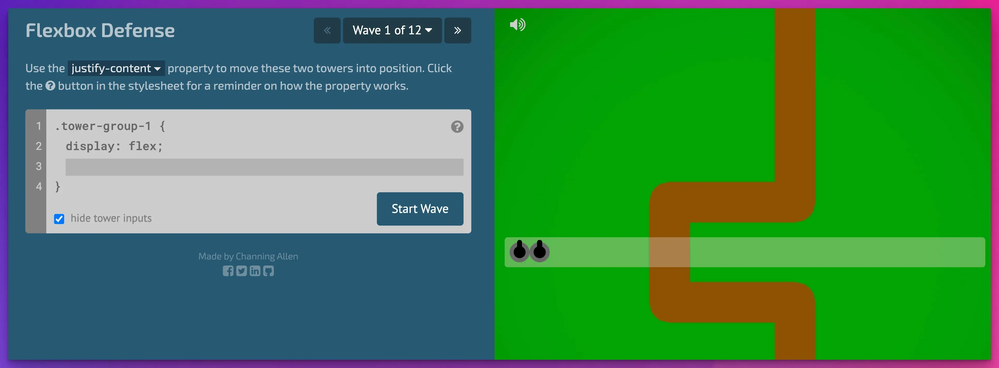

O Flexbox Defense é um jogo que mistura aprendizado de CSS com estratégia de tower defense. Em vez de só mover sapos como no Flexbox Froggy, você posiciona “torres” usando propriedades Flexbox para defender o mapa.
Ele é mais bruto que o Flexbox Froggy, ja que nos faz pensar mais na lógica real do layout, dando sensação mais próxima de resolver problemas de interface de verdade.